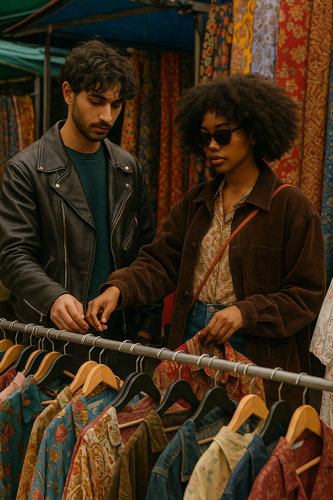
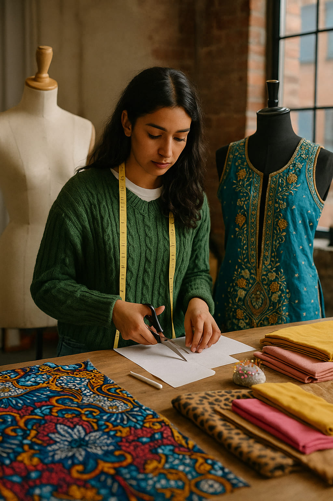

Visual Culture in Birmingham: Grit, Color, and Creative Energy
There’s something unexpectedly magnetic about Birmingham. Often overshadowed by London’s spotlight or Manchester’s indie fame, the UK's second-largest city is a layered collage of grit, raw creativity, and cultural expression. And it’s not trying to impress anyone—it just *is*. From graffiti tunnels to Brutalist buildings repurposed into creative hubs, Birmingham’s visual culture is a powerful current pulsing just beneath the surface.
“Birmingham doesn’t ask for attention. It creates it.”
Urban Skin: The Architecture of Rebellion
The city’s skyline is a lesson in visual tension. Old industrial warehouses stand stoic beside mirrored skyscrapers, and grey concrete monoliths like the Central Library (RIP) once shaped its identity. But in true Brummie fashion, these rigid spaces have been reimagined. Creative studios now thrive inside once-abandoned factories, and buildings wear murals like armor—color exploding across every available surface.
The Custard Factory in Digbeth, for instance, is more than just a name—it’s a portal into Birmingham’s artistic soul. Vibrant graffiti bleeds across the walls, boutiques sell zines and upcycled jackets, and creative professionals sip flat whites beside DJs mixing acid house at noon. It’s chaos, but curated.
“In Birmingham, even the walls tell stories.”
Street Style with an Accent
Fashion here isn’t London-polished. It’s proudly DIY, fearless, and locally charged. Think oversized jackets with grime-influenced swagger, 90s rave nostalgia in bucket hats, or Afro-Caribbean patterns worn like flags of identity. It’s not about brands—it’s about stance.
One of the most iconic style areas is The Bullring, where chain stores meet subcultural clashes. You’ll see vintage Adidas next to jilbabs, Doc Martens beside high-fashion knockoffs. And while it sounds chaotic, Birmingham pulls it off. Because here, fashion is personal protest.
Sound, Vision, Identity
Music is the backbone of Birmingham’s visual identity. It birthed heavy metal with Black Sabbath, pushed reggae with Steel Pulse, and fuelled UK garage and grime. These sounds live not just in headphones, but in murals, flyers, jackets, and dance floors. Birmingham style is loud because its music is louder.
Record stores like Swordfish and independent venues like Hare & Hounds keep the visuals analog: hand-drawn posters, hand-stitched merch, and hand-built scenes. There’s romance in the roughness.
Markets, Textiles, and Global Threads
Birmingham’s diversity is sewn into its fabrics. At the Birmingham Rag Market, rolls of shimmering saris sit beside faux-fur, denim, lace, and tartan. It’s a visual feast—and a map of the city’s global heartbeat. Designers here source locally, drawing inspiration from family heritage as much as streetwear.
Pakistani embroidery meets punk leather. African wax prints meet British tailoring. It’s not fusion—it’s cohabitation. And it’s brilliant.
Why Birmingham Matters Now
In a post-pandemic world craving authenticity, Birmingham is rising. It doesn’t need sleek campaigns or influencer gloss. Its strength lies in its rawness, its contradictions, and its unapologetic individuality. More and more fashion editors, photographers, and stylists are turning their lens towards this underrated style epicenter.
So next time you're looking for inspiration, skip the Tube and hop on a train to Birmingham. You'll find graffiti that moves you, outfits that challenge you, and a city that quietly redefines cool on its own terms.
Words by Style Atlas